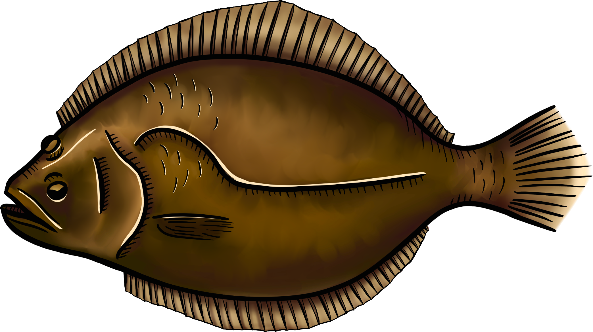

In a city defined by its iconic food scene, New Yorkers often enjoy fresh seafood without a second
thought about the journey it took to reach their plates. But behind each bite lies a complex network
that connects the waters surrounding Long Island to the bustling fish markets of Manhattan and Brooklyn.
Up to 80 percent of the fish and shellfish consumed in the United States is imported, much of it sourced
through obscure international seafood conglomerates. These entities often procure fish from companies
accused of illegal fishing practices and exploiting forced labor, as documented by the nonprofit Outlaw
Ocean Project.
In contrast, US is a recognized global leader in sustainable seafood! US fisheries are conducted under
science-based fishery management plans developed by regional fishery management councils through an
open, public process, and using the best scientific information available. New York City has access to
sustainable seafood resources from Long Island, offering a local and ethical alternative.
As global seafood consumption continues to rise, it’s easy to overlook the bounty found closer to home. Local waters off Long Island are teeming with a diverse range of fish species that often go unnoticed by consumers. Despite their availability, these local catches remain underappreciated compared to imported alternatives that dominate national markets. Understanding what local fish are and why they matter is a critical first step in reconnecting with regional food systems and fostering sustainable fishing practices.
The journey of local fish from ocean to market is a testament to the dedication of New York’s fishing communities. Each catch represents a carefully regulated process, ensuring that fish are harvested responsibly while maintaining the ecological balance of Long Island’s marine ecosystems. At the heart of this process lies a commitment to sustainability—fishing practices that protect local waters today while preserving them for future generations.


Sustainability doesn’t stop at the catch—it continues through every step of the process. From careful handling on fishing vessels to efficient transportation and responsible market practices, each stage is designed to minimize waste and maintain quality.


Markets play a pivotal role in bringing local fish to consumers' plates. From Montauk to the Fulton Fish Market, fresh catches arrive daily, offering chefs, grocers, and individuals access to sustainably harvested seafood. These local markets act as vital distribution points that ensure quality and freshness, connecting the hard work of fishermen to the tables of seafood lovers across New York.

.png)
.png)
.png)
Eating local fish ensures fresher, tastier seafood and supports a healthier diet. The U.S. is a global leader in sustainable seafood practices, with strict regulations that prioritize ecological balance. Local seafood has a much smaller carbon footprint compared to imported options, further promoting environmental sustainability. Prominent markets such as the Fulton Fish Market and local farmers' markets emphasize sustainable practices, making it easier for consumers to enjoy fresh fish while reducing their ecological impact. Choosing local seafood not only benefits personal health but also supports the environment and strengthens the local economy.
Support your community and the environment by choosing local fish. Buying fresh, sustainably caught seafood from local markets where you can get more information on localfish.org. It helps reduce your carbon footprint and provides a healthier, higher-quality protein source. By caring about where your fish comes from, you’re not just nourishing yourself—you’re supporting local fishermen, preserving the environment, and fostering a sustainable food system. Remember, you are what you eat, so make it count by choosing local fish.

This map is created by Cornell Cooperative Extension